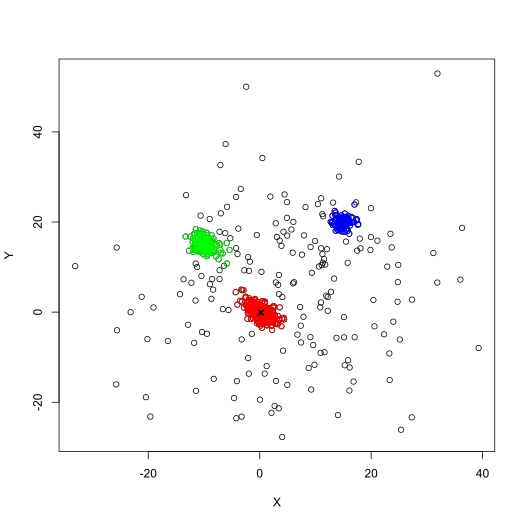

Robust Estimate of Mode in Multivariate Distribution
bril( data, maxIterations = NULL, minUnassigned = 0.1, method = "Projection", alpha = 0.5, testUnimodal = "DIP", threshUnimodal = 0.05, distUnimodal = "Euclidean", testNormal = "Mardia", threshNormal = 0.05, distNormal = "MCD", trimmedPerFilteringIteration = 1, exitWhenUnimodal = FALSE, debug = FALSE, warnings = FALSE )
| data | Matrix of numerical values containing the observations (one per row, with two columns for X and Y coordinates) |
|---|---|
| maxIterations | Maximum number of iterations performed by the algorithm (set to NULL or 0 for unlimited number) |
| minUnassigned | Numerical value between 0 and 1 (default: 0.1),
providing the proportion of unassigned samples from |
| method | Method to use. Valid options are "MCD" and "MVE" for convex body minimizers, or "L2", "Lui", "Mahalanobis", "Oja", "Projection" (default), "Spatial" and "Tukey" for depth functions |
| alpha | Proportion of samples trimmed at each iteration of the recursive
median estimate (numerical value between 0 and 1, default: 0.5), see
|
| testUnimodal | Statistical test used for unimodality. Valid options are
"DIP" only, see |
| threshUnimodal | Threshold of significance for the unimodality test (numerical value between 0 and 1, default: 0.05) |
| distUnimodal | Distance metric used for ordering the samples in the unimodal filtering. Valid options are "Euclidean" (default), or "MCD", "MVE", and "OGK" for robust distances. "Euclidean" is strongly advised for unimodality tests. |
| testNormal | Statistical test used for normality. Valid options are
"Mardia" (default), "Kurtosis", "Skewness", "KS", "KS-adj", "Shapiro",
"Lillie" and "Chisq", see |
| threshNormal | Threshold of significance for the normality test (numerical value between 0 and 1, default: 0.05) |
| distNormal | Distance metric used for ordering the samples in the normal filtering. Valid options are "Euclidean", or "MCD" (default), "MVE", and "OGK" for robust distances. Robust distances are strongly advised for normality tests. |
| trimmedPerFilteringIteration | Number of samples trimmed at each
iteration of the unimodality and normality filtering (default: 1), see
|
| exitWhenUnimodal | Logical value. |
| debug | Logical value. |
| warnings | Logical value, to display the warnings and errors caught |
The function returns an S3 object of type BRIL containing the
following values:
callParameters of the call (contains data, maxIterations,
minUnassigned, method, alpha, testUnimodal, threshUnimodal,
distUnimodal, testNormal, threshNormal, distNormal,
trimmedPerFilteringIteration, and exitWhenUnimodal)
iterationsA list with every global iteration of the algorithm,
each containing the two filtering procedures performed: filteringUnimodal
and filteringNormal (both being S3 object of class BRIL.Filtering, see
filter_outliers())
nbClustersNumber of groups encountered
labelsLabels of the groups encountered (corresponding to the number of the iteration they were identified in)
clustersCentersMatrix containing the coordinates of the centers of each group (row-wise)
clustersSizesArray with the number of samples in each group
mainClusterIndex of the group identified as main mode
modeCoordinates of the main mode
# Create a sample distribution and run bril() function XY <- rbind( mvtnorm::rmvnorm(300, c(0, 0), diag(2) * 3 - 1), mvtnorm::rmvnorm(100, c(15, 20), diag(2)), mvtnorm::rmvnorm(150, c(-10, 15), diag(2) * 2 - 0.5), mvtnorm::rmvnorm(200, c(5, 5), diag(2) * 200) ) res <- bril(XY, debug = TRUE) print(res)#> #> => Results for bril() using method "Projection" (alpha=0.5), DIP Unimodality Test (> 0.05), and Mardia Normality test (> 0.05) #> 750 samples: 3 clusters identified (sizes 311, 157, 106), and 176 samples unassigned #> #> Mode: #> [1] 0.2010784 -0.0902806 #> #> #> Clusters Sizes: #> [1] 311 157 106 #> #> #> Clusters Centers: #> [,1] [,2] #> [1,] 0.2010784 -0.0902806 #> [2,] -9.8754989 15.0017539 #> [3,] 15.0520460 19.9446651 #> #> #> Labels: #> [1] 1 1 1 1 1 1 1 1 1 1 1 1 1 1 1 1 1 1 1 1 1 1 1 1 1 1 1 1 1 1 1 1 1 1 1 1 1 #> [38] 1 1 1 1 1 1 1 1 1 1 1 1 1 1 1 1 1 1 1 1 1 1 1 1 1 1 1 1 1 1 1 1 1 1 1 1 1 #> [75] 1 1 1 1 1 1 1 1 1 1 1 1 1 1 1 1 1 1 1 1 1 1 1 1 1 1 1 1 1 1 1 1 1 1 1 1 1 #> [112] 1 1 1 1 1 1 1 1 1 1 1 1 1 1 1 1 1 1 1 1 1 1 1 1 1 1 1 1 1 1 1 1 1 1 1 1 1 #> [149] 1 1 1 1 1 1 1 1 1 1 1 1 1 1 1 1 1 1 1 1 1 1 1 1 1 1 1 1 1 1 1 1 1 1 1 1 1 #> [186] 1 1 1 1 1 1 1 1 1 1 1 1 1 1 1 1 1 1 1 1 1 1 1 1 1 1 1 1 1 1 1 1 1 1 1 1 1 #> [223] 1 1 1 1 1 1 1 1 1 1 1 1 1 1 1 1 1 1 1 1 1 1 1 1 1 1 1 1 1 1 1 1 1 1 1 1 1 #> [260] 1 1 1 1 1 1 1 1 1 1 1 1 1 1 1 1 1 1 1 1 1 1 1 1 1 1 1 1 1 1 1 1 1 1 1 1 1 #> [297] 1 1 1 1 3 3 3 3 3 3 3 3 3 3 3 3 3 3 3 3 3 3 3 3 3 3 3 3 3 3 3 3 3 3 3 3 3 #> [334] 3 3 3 3 3 3 3 3 3 3 3 3 3 3 3 3 3 3 3 3 3 3 3 3 3 3 3 3 3 3 3 3 3 3 3 3 3 #> [371] 3 3 3 3 3 3 3 3 3 3 3 3 3 3 3 3 3 3 3 3 3 3 3 3 3 3 3 3 3 3 2 2 2 2 2 2 2 #> [408] 2 2 2 2 2 2 2 2 2 2 2 2 2 2 2 2 2 2 2 2 2 2 2 2 2 2 2 2 2 2 2 2 2 2 2 2 2 #> [445] 2 2 2 2 2 2 2 2 2 2 2 2 2 2 2 2 2 2 2 2 2 2 2 2 2 2 2 2 2 2 2 2 2 2 2 2 2 #> [482] 2 2 2 2 2 2 2 2 2 2 2 2 2 2 2 2 2 2 2 2 2 2 2 2 0 2 2 2 2 2 2 2 2 2 2 2 2 #> [519] 2 2 2 2 2 2 2 2 2 2 2 2 2 2 2 2 2 2 2 2 2 2 2 2 2 2 2 2 2 2 2 2 0 0 0 0 0 #> [556] 0 0 0 1 0 0 0 0 1 0 0 0 0 0 0 1 0 0 0 0 0 0 0 0 0 0 0 0 0 0 0 0 0 1 0 0 1 #> [593] 3 0 0 0 0 0 0 0 0 0 3 0 0 0 0 0 0 0 0 0 0 0 0 0 0 0 1 3 0 0 0 0 0 0 0 0 2 #> [630] 0 0 1 0 0 0 0 0 0 0 0 1 0 0 0 0 0 0 0 0 0 0 0 0 0 0 0 0 0 0 0 0 0 0 0 0 2 #> [667] 1 0 0 1 0 0 0 0 0 0 0 0 0 2 0 0 0 0 0 0 0 2 0 2 0 0 0 0 0 0 0 0 3 0 0 0 0 #> [704] 0 0 0 2 0 0 0 0 0 0 0 1 0 0 0 0 0 0 0 0 0 0 0 3 0 0 0 2 0 0 0 0 0 0 0 0 0 #> [741] 0 0 2 0 0 0 0 0 3 0 #> #># Plot the different iterations (interactive) if (FALSE) { plot(res, contents = "iterations", asp = 1) } # See ?plot.BRIL() for other plotting examples